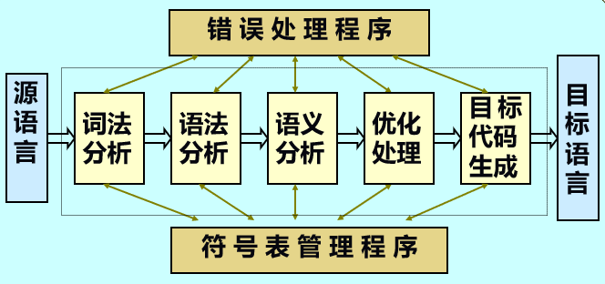

编译程序基本概念
- 编译程序是一种翻译程序，它特指把某种高级程序设计语言翻译成与之等价的具体计算机上的低级程序设计语言
- 解释程序也是一种翻译程序，它将源语言书写的源程序作为输入，解释一句后就提交计算机执行一句，并不形成目标程序
- 编译程序与解释程序的主要区别：
前者有目标程序而后者无目标程序，前者运行效率高而后者便于人机对话 - 编译程序的五个阶段
 - 遍(pass)：编译程序对源程序或等价程序从头至尾扫描的次数
形式语言基础
- 形式语言的基本观点是：语言是符号串的集合
- 形式语言理论研究的基本问题是：研究符号串集合的表示方法、结构特性以及运算规律
- 形式语言是字母表上的符号按一定的规则组成的所有符号串集合；其中每个符号串称为一个句子
字母表：元素的非空有限集合
符号串：符号的有限序列
符号串集合：有限个或者无限个符号串组成的集合
规则：符号串的组成规则 - 文法：用有穷的集合刻画无穷的集合的工具
- 文法(grammar)是规则的有限集，通常可以表示为四元组G(Z)=(VN, VT, Z, P)
VN：非终结符集(定义的对象集)
VT：终结符集(字母表)
Z：开始符号(研究范畴中最大的定义对象)
P：规则集(又称产生式集) - 一个文法所定义的语言，就是该文法开始符号推导出的所有仅含终结符的所有符号串的集合。其中的每个符号串皆称为句子
- 从开始符号出发，对符号串中的定义对象，采用推导的方法产生新的符号串，如此进行。直到新符号串中不再出现定义的对象为止，则最终的符号串就是一个句子
- 直接推导：指用产生式的右部符号串替换左部非终结符
加推导：指一步或一步以上的直接推导运算
星推导：指零步或零步以上的直接推导运算 - 直接归约：直接归约式直接推导的逆运算，用产生式的左部非终结符替换右部符号串
加归约：指一步或一步以上的直接归约运算
星归约：指零步或零步以上的直接归约运算 - 最左推导：每次推导皆最左非终结符优先
最左归约：每次归约皆最左可归约串优先
最右推导也称为规范推导
最左归约也成为规范归约
最左归约是最右推导的逆过程 - 句型是由文法开始符号加推导出的任一符号串
句子是由开始符号加推导出的任一终结符号串 - 语法树：句型(句子)产生过程的一种树结构表示
子树：由某一结点连同所有分支组成的部分
简单子树：仅具有单层分支的子树
短语：任一子树的树叶全体(具有共同祖先的叶节点符号串)皆为短语
简单短语：任一简单子树的树叶全体(具有共同父亲的叶节点符号串)皆为简单短语
句柄：一个句型的最左简单短语称为该句型的句柄 - 若A->Aα，称文法具有直接左递归性；A->αA，称文法具有直接右递归性
递归文法是定义无限语言的工具，递归文法定义的语言有无限个句子 - 若文法中存在这样的句型，它具有两棵不同的语法树，则称该文法是二义性文法
- 文法的等价性是指它们所定义的语言是一样的；一个语言，其描述文法并不唯一
- BNF(巴科斯范式)表示法，()必选项，[]可选项，{}重复可选项
- 形式语言的分类：
0型语言(无限制文法)：α->β
1型语言(上下文有关文法)：αAβ->αuβ
2型语言(上下文无关文法)：A->β
3型语言(正规文法)：A->aB或A->a 右线性文法；A->Ba或A->a 左线性文法
自动机基础
- 正规语言无法描述a和b数量上相等
- 正规式表示的语言是该正规式所有值的集合
- 正规语言的三种表示法：正规文法、正规式、有限自动机
- 有限自动机是一种数学模型，用于描述正规语言，可定义为五元组FA=(Q,Σ,S,F,δ)
Q(有限状态集)；Σ(字母表)；S(开始状态集)；F(结束状态集)；δ变换(二元函数) - 确定的有限自动机(DFA)：开始状态唯一；变换函数单值；不带ε边
语法分析
- 递归子程序法的设计原理：对每一个非终结符，构造一个子程序，用以识别该非终结符所定义的符号串。每个子程序以产生式左部非终结符命名，以产生式右部构造子程序内容
- LL(1)分析法：从左到右扫描，最左推导，只查看一个当前符号。又称预测分析法，属于自顶向下确定性语法分析方法
- LR()分析法：从左到右扫描，最左归约，自底向上
- SLR(1)分析法：LR(0)分析的改进与扩充，当句柄识别器发生了移进和归约冲突或者归约和归约冲突时，通过查看1个当前符号就可解决
中间代码及其翻译
- 中间代码设置的目的：便于进行与机器无关的代码优化；使编译程序改变目标机更容易；使编译程序的结构在逻辑上更为简单明确，以中间语言为界面，编译前端和后端的接口更清晰
- 属性文法：上下文无关文法在语义上的扩展，是一种接近形式化的语义描述方法，可定义为如下三元组：A=(G, V, E);G(文法)，V(属性集)，E(语义规则集)
- 属性代表与文法符号相关的信息，这里主要指语义信息；文法产生式中的每个文法符号都附有若干个这样的属性
- 属性可以计算和传递，语义规则就是在同一产生式中，相互关联的属性求值规则
- 属性可以分两类：综合属性，其值由子女属性值来计算(自底向上求值)；继承属性，其值由父兄属性值来计算(自顶向下求值)
- 语法制导翻译技术：在语法分析过程中，随着分析的逐步进展，每识别出一个语法结构，根据文法的每个规则所对应的语义子程序进行翻译的方法
语法制导翻译技术=语法分析技术+属性翻译文法构造技术 - 自顶向下属性翻译文法的要求：
原文法应满足自顶向下分析要求
属性式自顶向下可求值的
动作符号可插入到产生式右部任何位置
- 自底向上属性翻译文法的要求：
原文法应满足自底向上分析要求
属性是自底向上可求值的
动作符号只能位于产生式的最右端
符号表组织
- 符号表是标识符的动态语义词典，属于编译中语义分析的知识库，主要包括名字、类型、种类、地址
- 符号表的作用：
定义和重定义检查
类型匹配校验
数据的越界和溢出检查
值单元存储分配信息
函数的参数传递与校验 - 一个源文件有若干个函数组成，通常每个函数对应一个符号表，此外还有一个公用符号表
代码优化
- 优化的分类：
(1) 与机器无关的优化：全局优化、局部优化、循环优化
(2) 与机器有关的优化：寄存器分配的优化、消除无用代码 - 常见的局部优化方法：
常值表达式节省(常数合并)
公共子表达式节省(删除多余运算)
删除无用赋值
不变表达式外提
削减运算强度 - 基本块：程序中一段顺序执行的语句序列，其中只有一个入口和一个出口
- 基本块划分算法：
入口语句：程序的第一个语句或转向语句转移到的语句；紧跟在转向语句后面的语句
出口语句：下一个入口语句的前导语句；转向语句(包括自身)；停语句(包括自身) - DAG(Directed Acyclic Graph)无环有向图
目标代码及其生成
- 活跃变量：一个变量从某时刻(q)起，到下一个定义点止，其间若有应用点，则称变量在q是活跃的，否则称该变量在q是非活跃的
- 假定临时变量在基本块出口后是非活跃的，非临时变量在基本块出口后是活跃的
- RDV 寄存器状态变量